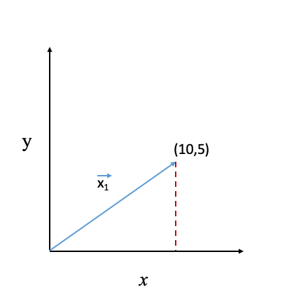

Let’s assume that you have a dataset with a higher number of attributes and you are thinking Is there any way to compress this information into a smaller number of attributes.
Well, dimensionality reduction methods offer that functionality. Among many dimensionality reduction methods, PCA (Principal Component Analysis) is widely used and this post introduction to PCA and its working.
Let’s start with a simple dataset with two attributes, \(x\), and \(y\) which we need to reduce from two attributes to one.
| $x$ | $y$ |
| 10 | 5 |
| 12 | 5 |
| 16 | 6 |
| 20 | 7 |
| 19 | 5 |
The simplest approach is to select one of the attributes. Let’s say we are selecting \(x\). In other words, we are taking the projection of the data points on X-axis (Projection: simply drawing a perpendicular line from data points to the x-axis and taking that corresponding value). For example, in the following diagram, we have taken the projection of data points along the x-axis.
So here we have two options, we can take the projection of data points to either x-axis or y-axis. Our aim is to select one which offers more information about the data. To measure it, we can use variance which computes spread of data or in other words how the values are different from their mean value. So if you have an attribute with zero variance that means all values in that attribute are same. Variance can be computed using the following formula \[ \sigma^2 = \sum\limits_{i=1}^N (X -\mu)^2 \] where: \(X\) is the set of data points \(\mu\) is the mean \(N\) is the number of data points in \(X\)So, now if we look at our options (projection along x-axis or y-axis) then we find x-axis as a better option due to the larger variance shown in below figure

No, there are infinite number of possibilities (How: draw any line and take the projection of data points on that line in a similar manner as we did with x/y axis). In this case, if we can find a line which gives maximum variance of the data compared to other possible options then it can be used at the place of \(x\) and \(y\) attributes.
Principal Component Analysis (PCA)
As we discussed in the above section the infinite possibilities for our two-dimensional data, PCA finds the one which offers maximum variance. Let’s go deeper into the mathematics of PCA.
Understanding Mathematics behind PCA
First, we are going to write the problem statement (finding a direction/vector/line which offers a maximum variance of projected data) of PCA into mathematics format. First, we need to see how to represent the projection. A projection of a data point along with a line can be computed using \(dot\) product. Let’s say we want to compute the projection of the first data point (10,5) on the x-axis.
Let’s represent our data point as a vector \(\vec{x_1}\). A vector has two properties- direction and magnitude (more info). The unit vector in the direction of x-axis and y-axis is represented by \(\hat{i}\) and \(\hat{j}\), respectively. Every vector then denoted by number of units in the direction of x-axis and y-axis. Our data point (10,5) can be represented as 10 units in x-axis direction and 5 units in y-axis direction. The dot product between \(\vec{x_1}\) and \(\hat{i}\) will give the projection over the x-axis.\[= (10\hat{i},5\hat{j}) . (\hat{i},0)\]
\[= 10\]

In simpler terms, if you have two vectors or list of numbers \((a_1,a_2,a_3)\) and\((b_1,b_2,b_3)\) then their dot product will be \(a_1*b_1+a_2*b_2+a_3*b_3\). It can be written in matrix form as following \[ dot(A,B)=\begin{bmatrix} a_1 & a_2 & a_3\ \end{bmatrix}\begin{bmatrix} b_1 \\ b_2 \\ b_3 \\ \end{bmatrix} = A^TB \] here, \(A^T\) is transpose of \(A\).
A dot product of \(\vec{A}\) with its own gives you \(A^2\).
Now coming back to PCA problem statement, let’s denote a direction (/vector/line) \(\vec{L}\). So projection of our dataset \(X\) can be written as \[ X_{new}=X^TL \] here, \(X_{new}\) represents the new values obtained after projection of \(X\) over \(L\). To ease the understanding of next step, let’s assume we transformed \(X_{new}\) in such a way that it has zero mean (we can do that by simply replacing every value in \(X_{new}\) by \(X_{new}-Mean)\). Next, we compute the variance of \(X_{new}\).
\[ var(X_{new}) = (X_{new}-0)^2 \\ = X_{new}^2 \\ = X_{new}^TX_{new} = (X^TL)^T(X^TL) = (L^TXX^TL) = (L^T \sum L) \]here, \(\sum\) is covariance matrix of \(X_{new}\).
Rule used: \((AB)^T = B^TA^T\) and \((A^T)^T = A\)
We add a constraint that L must be a unit vector which means \(L^TL=1\).
Why: In a single direction there can be infinite possibilities for example \(2\hat{i}+1\hat{j}\), \(4\hat{i}+2\hat{j}\), \(\hat{i}+.5\hat{j}\) all vectors are in the same direction. Therefore, to avoid it, we put a constraint that we will check only a single vector in a direction and that one with unit vector (to avoid large values).
Now, our problem is to find \(L\) which maximizes \(var(X_{new})\) with constraint \(L^TL=1\) (constrain of unit vector). (also known as constrained maximization problem)
To formulate this problem, we will use Lagrange Multiplier. Our problem can be written as follows \[ \max_{L} = (L^T\sum L)-\lambda(L^TL-1) \]
To solve it, we will differentiate it with respect to \(L\) and then equate it to zero. As we seen above that \(L^TL=L^2\), therefore, differentiating it gives us \(2L\). \[ \sum L - \lambda (L) = 0 \]
\[ \sum L = \lambda L \]
The above equation is actually stating that \(L\) must be eigenvector of covariance matrix of \(X\).
A brief about eigen vector
Let’s consider a matrix as a system of transformation. When it is multiplied with a vector that vector gets transformed into a new vector. Let’s take an example. We have a matrix \[ M = \begin{bmatrix} 2 & -4 \\ -1 & -1 \\ \end{bmatrix} \] We will multiply (or apply) it on a vector \(A = [2,3]\). The multiplication of \(M\) and \(A\) will give \[ \begin{bmatrix} 2 & -4 \\ -1 & -1 \\ \end{bmatrix} \begin{bmatrix} 3 \\ 2 \\ \end{bmatrix} = \begin{bmatrix} -2 \\ -5 \\ \end{bmatrix} \] As it’s shown in the below figure that point (3,2) transformed into new point (-2,-5). Now, if we multiply \(B = [1,1]\) with M then we will get result in the same direction.
 \[
\begin{bmatrix}
2 & -4 \\
-1 & -1 \\
\end{bmatrix}
\begin{bmatrix}
1 \\
1 \\
\end{bmatrix}
= \begin{bmatrix}
-2 \\
-1 \\
\end{bmatrix}
= -2\begin{bmatrix}
1 \\
1 \\
\end{bmatrix}
\]
\[
\begin{bmatrix}
2 & -4 \\
-1 & -1 \\
\end{bmatrix}
\begin{bmatrix}
1 \\
1 \\
\end{bmatrix}
= \begin{bmatrix}
-2 \\
-1 \\
\end{bmatrix}
= -2\begin{bmatrix}
1 \\
1 \\
\end{bmatrix}
\]
Coming back to our last equation \(\sum L = \lambda L\), now the question is which eigenvector (as there can be many eigen vectors of a matrix) to use. Let’s have a look on our variance \((L^T\sum L)\) which we want to maximize.
\[ = (L^T\sum L) = (L^T\lambda L) = \lambda(L^T L) = \lambda \]
So, to maximize the variance, we need to take eigenvector with maximum eigen value (\(\lambda\)). Here is our first vector, one with highest Eigen value.
- Compute Covariance matrix (\(\sum\)) of \(X\)
- Subtract \(X_\mu\) (mean) from \(X\)
- Compute eigenvector \(\sum\)
- Reorder the eigen vectors according to their corresponding eigen value
- Project data set on those eigenvectors beginning from the start (as the first eigenvector has the highest eigenvalue, second eigenvector with second-highest, and so on)
Key points
-
PCA is a
unsupvervisedmachine learning algorithm. -
PCA dimensions are linear combinations of original attributes. Therefore, it is a
linearDR method. However, there are variants of PCA (e.g.kernelPCA) which offers non-linearity feature. - Uneven data range of attributes can influence the PCA results, therefore, standardize your data before applying PCA.
Example
Python’s library scikit-learn has numerous inbuilt functions for dimensionality reduction. In this example, we will see how to use that function. First, we need to import the packages# For loading iris dataset
from sklearn import datasets
# For standardizing our data
from sklearn.preprocessing import StandardScaler
# For PCA
from sklearn import decomposition
# Load your dataset here
iris = datasets.load_iris()
# In the next step, we will standardize our data.</p>
# Creating Standard Scaler
scaler = StandardScaler()
# Fitting iris data to a scaler
scaler.fit(iris)
# Transform the data into standardised form
new_iris = scaler.transform(iris)
# Create PCA object
pca = decomposition.PCA(n_components=3)
# Fitting data to PCA
pca.fit(new_iris)
# Computing new dimensions
dr_iris = pca.transform(new_iris)Let’s check now how much variance offered by new dimensions. There is an attribute of PCA class in sklearn library: explained_variance_ratio_ which offer this information.
print(PCA.explained_variance_ratio_)
# Output
# array([0.72962445, 0.22850762, 0.03668922])</code></pre>As it can be seen that first two principal components offered in total around 94% variance o f original data.